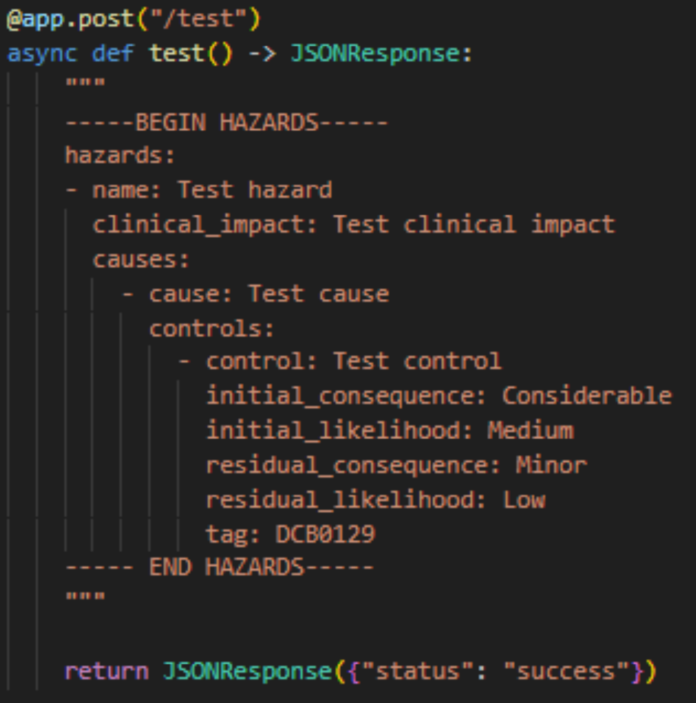

Digital Clinical Safety Platform
Digital Clinical Safety Alliance
Who’s who?
Dr Michelle Durham GP and Clinical Informatics Specialist

Mark Bailey Locum Respiratory Consultant and Clinician-who-codes
Marcus Baw Locum GP and ED doctor and Clinician-who-codes

Grant Vallance Information Manager
Joe Channing Software Engineer
Dean Mawson Clinical Director DPM Digital Health Consultancy Ltd
Plan
- Introductions (done)
- Current Process
- Cookiecutter DCB0129
- Hazards logging in code
- Hazard types
- The Digital Clinical Safety Platform
- Feedback from a user - Dean Mawson
- Questions and Answers
DCSP
DCSP
Current Clinical Safety Documentation
Clinical safety standards
- IEC 62304
- DCB 0129
- DCB 0160
- …
A mixture of everyday office softwares
- Word processor, eg NHS-E Clinical risk management system template
- Spreadsheet, eg NHS-E DCB 0129 Compliance Assessment and NHS-E hazard logs
- Kanban boards (eg Jira)
- Process mapping (eg MS Visio, Moqups)
- Home grown systems
And what advancements on the above are there?
Cookiecutter DCB0129
https://github.com/digital-clinical-safety-alliance/dcb0129-mkdocs-template
Overview of Cookiecutter-DCB0129
- Created by Dr Marcus Baw.
- Used during clinical safety documentation of the RCPCH Digital Growth Chart APIs.
Overview of Cookiecutter-DCB0129
- Stores safety documentation on GitHub (public or private).
- Uses markdown templates to build safety documentations.
- Provides placeholders for important repetitive, project specific items.
Overview of Cookiecutter-DCB0129
- Builds a static web page of the safety documents.
- These can be downloaded into a PDF form.
- Website served via GitHub Pages.
- Automatically generate hazard labels via GitHub actions.
Placeholders
---
title: Hazard Log
---
# {{ project_name }} Hazard Log
In keeping with our commitment to transparency and openness, our Hazard Log is publicly visible and managed in GitHub using the Issues feature.Pros and cons of Cookiecutter-DCB0129
Pros
- Automates a large amount of the documentation process.
- Creates easy to access, open and online documentation.
Cons
- Requires “basic” programming knowledge to setup and modify.
- Setup is via command line interface only.
Terminal based

Hazards logging in code
DevSecRegOps:
A framework for aiding security and compliance in modern healthcare software development
- A dissertation by Joe Channing, May 2023.
- Development-Security-Regulations-Operations Framework.
- Taking DevOps and aligning with security testing and healthcare regulations.
- DevSRO for short.
DevSRO overview
- Integrating regulatory compliance as part of the continuous integration / continuous deployment workflow.
- Enables compliance to keep up with the fast pace of development seen with DevOps.
- Obtain collaboration and integration of software developers in the building of safer software for healthcare.
- Hazard logging in code.
- Hazards and their mitigations in code are version controlled, which provides a robust audit trail.
Hazard logging in code
Creating hazard documentation
DevSRO pros
- Greater collaboration of software developers, operations, and security with the clinical safety team.
- Audit trail of hazards and how they are directly mitigated in the code.
- Safer software.
DevSRO cons
- The code base becomes too wordy if all of the hazard material is only kept in the code itself.
- Safety officers and those working in close collaboration may need to be able to read code.
- Training of software developers in clinical risk management.
For the last two points, this is short term pain for long term gain, as we would ultimately be building better and safer systems.
Hazard types in code
Standardised hazards types
- Based on built-in exceptions (errors) types in Python.
- Most programming languages have exceptions types.
exception KeyError
exception ValueError
exception MemoryError
exception RuntimeError
Typing hazards
def BMI(self, weight: float, height: float) -> float:
"""Work out BMI from weight
Calculate the weight of the patient. Uses metric units
Args:
weight (float): weight of the patient in kilograms
height (float): height of the patient in meters
Returns:
float: BMI of the patient
Raises:
ValueError: wrong weight range
ValueError: wrong height range
Hazards:
WrongPatient (1): The wrong patient
WrongDemograhics (2): The wrong patient gender
"""Possible hazard types
- Up for debate…
Patient demographics related
- WrongPatient
- WrongDemographics
Medication / non-surgical related
- WrongDrug
- WrongDrugDose
- DrugDelay
- NoTreatment
- WrongAdministrationRoute
- Allergy
Surgical related
- WrongSurgicalSite
- WrongSurgery
Observations related
- WrongObservation
- WrongObservationResult
- WrongObeservationIntepretation
Investigation related
- RequestNotReceivedActioned
- WrongInvestigation
- WrongInvestigationSite
- WrongDiagnosis
Referral related
- ReferralNotReceivedActioned
- WrongReferralType
Clinical interaction related
- NoClinicalInteraction
- NoDocumentationOfClinicalInteraction
- DelayedClinicalInteraction
- WrongClinicalInteraction
Data related
- CorruptedData
- NoAccessToData
Security related
- DataBreach
System related
- SystemCrash
- CommunicationError
End-user related
- AlarmFatigue
Miscellaneous
- Duplicate
- Incomplete
- GeneralHazard
The Digital Clinical Safety Platform
DCSP Overview
- The Digital Clinical Safety Alliance was formed to create a new clinical safety documentation system.
- The Digital Clinical Safety Platform (DCSP) combines the best of:
- CookieCutter-DCB0129
- DevSRO framework
- Hazard typing
DCSP Overview
- Streamlines and automates safety documentation.
- Easy to use user-interface.
- Use templates.
- Adaptable to any safety standard.
- Audit trail.
Static and dynamic webpages
- The dynamic side helps the user create the clinical safety documentation.
- The static side presents the finalised documents.
Live demo
Bringing all of the players into the same room
Over the wall
- Traditionally, the team that developed an app, the development team, created said app and then shipped the app to the operations team, who then in turn prepared the app for use in production.
- This was very inefficient, as there was a lot of throwing over a bureaucratic wall, back and forth to fix bugs and make production ready.
DevOps was born
- To stop this back and forth between teams, the teams were merged together in the DevOps team.
- And then the security team was added, and so we have DevSecOps.
Healthcare needs regulation
- As healthcare is tightly regulated, regulation should also be incorporated into the DevOps team, alongside security:
Development-Security-Regulations-Operation Framework
↓ ↓ ↓
DevSRO
DCSP - Future features
DCSP - Future features
- Graphical function to draw and manage hazards of a digital process / system.
- Anything else people highlight in the Q&A section today.
The full stack
The full Stack
The full stack
- NGINX reverse proxy server
- Gunicorn WSGI HTTP server
- Django dynamic site framework
- Material for MKDocs static site creator
- Python
- Javascript for additional frontend functionality
- Containerisation (Docker)
- Cloud service (DigitalOcean)
CI/CD pipeline
- Git version control
- GitHub and GitHub Actions
- Non-main branch testing followed by main branch push to production
- Black and djLint Linters
- Bandit security checker
- MyPy type checking
- PyTest unit & coverage testing
- Automatic app documentation build
- (Integration testing and further security testing to come)
Feedback from Dean Mawson
DCSP conclusion
- Streamlined and automated clinical safety documentation
- User-friendly interface
- Templates
- Adaptable to any safety standard
- Safety built in at the code level
- Audit trail
Questions and answers
Sponsor / support the DCSP
dcsp.information@gmail.com